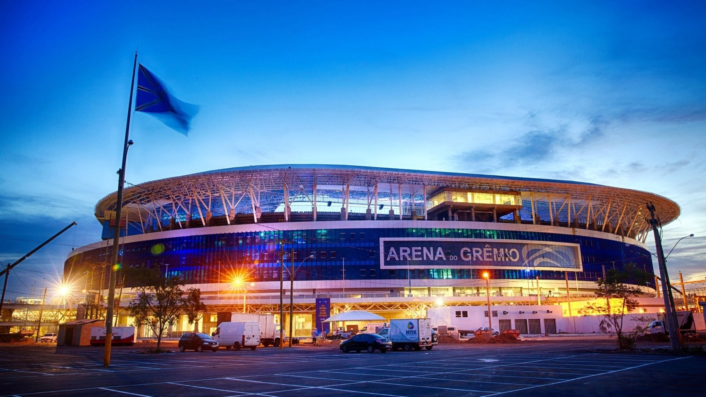

4° - Grêmio Foot-Ball Porto Alegrense
(1903)
História do Clube

Grêmio Foot-Ball Porto Alegrense was founded on September 15, 1903,
in a restaurant in the central region of Porto Alegre.
team won the first championship they played, the Wanderpreiss Cup,
1905 - and would win again in seven other opportunities.
Grêmio Bonds
• Worldwide;
1 Titles• Liberators of America Cup;
3 Titles• Brazilian championship;
2 Titles• South American Cup;
1 Titles• Gaucho Championship
36 Titles• Brazil's Cup;
4 Titles• South Cup;
1 Titles• Brazilian Championship (Series B);
1 TitlesGrêmio's biggest idol
All titles by Renato for Grêmio:
Adding all three spells in the tricolor, there were 411 matches and seven
titles. Idol, the coach led the club to state, national and
continental. In all, there were four Gaucho Championships (2018, 2019, 2020 and
2021),
a 2016 Brazil Cup and a 2017 Libertadores da América.
Grêmio Arena
Club anthem
Letter
Até a pé nós iremos
Para o que der e vier
Mas o certo é que nós estaremos
Com o Grêmio onde o Grêmio estiver
Até a pé nós iremos
Para o que der e vier
Mas o certo é que nós estaremos
Com o Grêmio onde o Grêmio estiver
50 anos de glória
Tens imortal tricolor
Os feitos da tua história
Conta o Rio Grande com amor
Até a pé nós iremos
Para o que der e vier
Mas o certo é que nós estaremos
Com o Grêmio onde o Grêmio estiver
Até a pé nós iremos
Para o que der e vier
Mas o certo é que nós estaremos
Com o Grêmio onde o Grêmio estiver
Nós somos bons torcedores
Sem hesitarmos sequer
Aplaudiremos o Grêmio
Aonde o Grêmio estiver
Até a pé nós iremos
Para o que der e vier
Mas o certo é que nós estaremos
Com o Grêmio onde o Grêmio estiver
Até a pé nós iremos
Para o que der e vier
Mas o certo é que nós estaremos
Com o Grêmio onde o Grêmio estiver